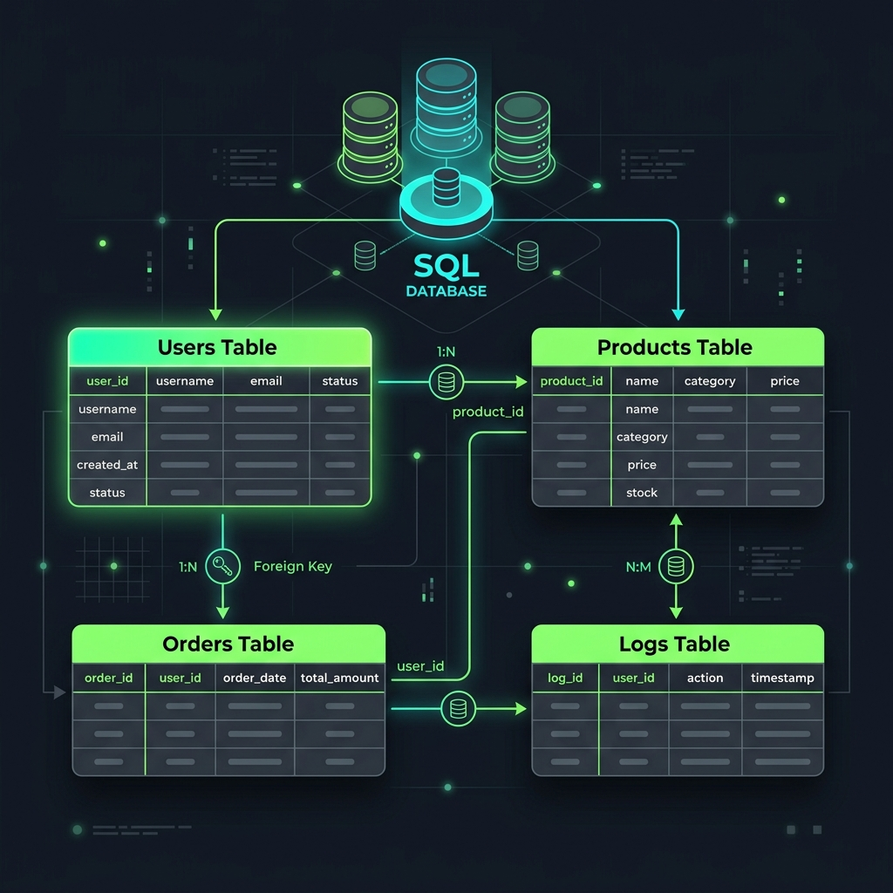
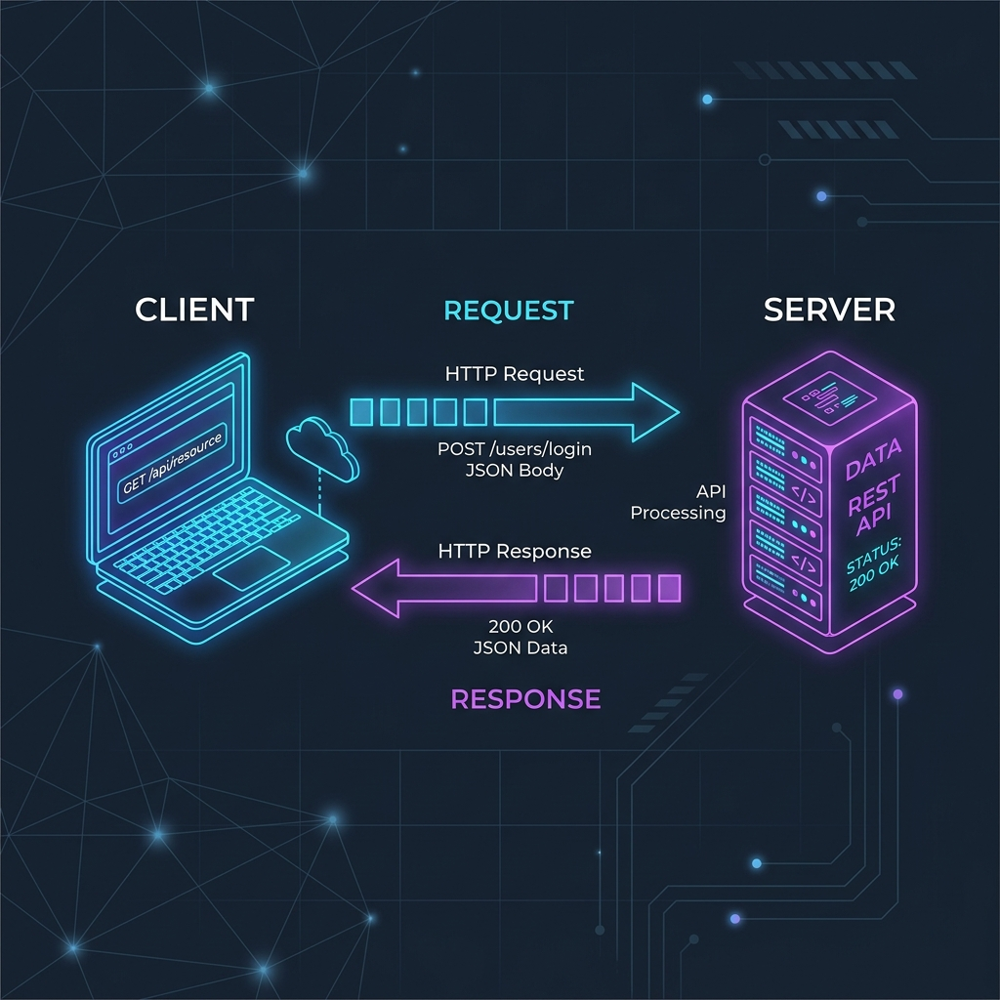
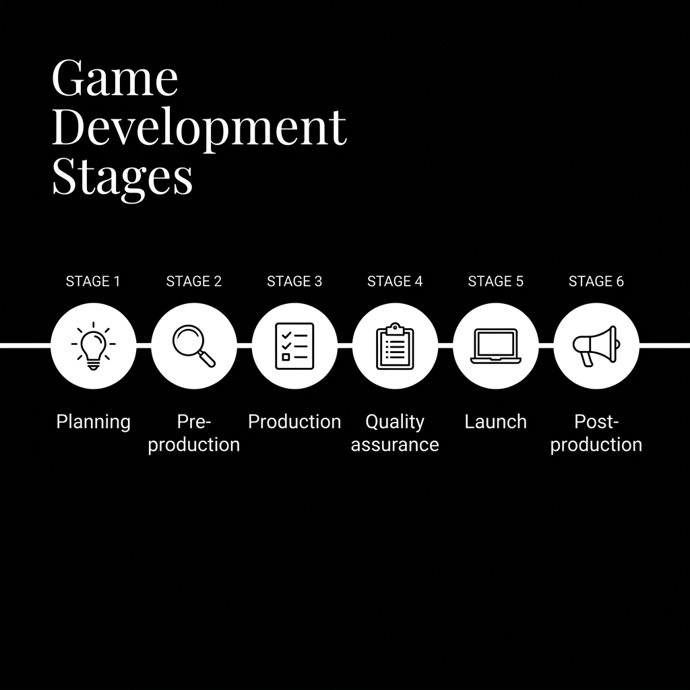
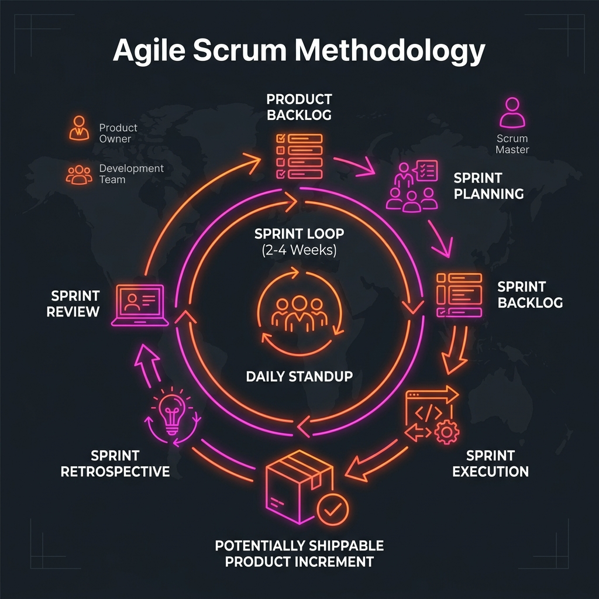

1. База: що таке тестування
- Software Testing — процес перевірки ПЗ, щоб виявити дефекти та переконатися, що продукт відповідає вимогам.
- Defect — помилка в коді, вимогах або дизайні.
- Bug — прояв дефекту під час виконання програми (коли бачиш некоректну поведінку).
- QA (Quality Assurance) — процесний підхід: стандарти, правила, покращення процесу розробки, щоб запобігати дефектам.
- QC (Quality Control) — робота з самим продуктом: тестування, рев’ю, інспекції, щоб знайти дефекти.
2. Методи та типи тестування
Методи (як ми тестуємо — доступ до коду)
- Black Box — тестуєш функціонал, не знаючи коду. Робота тільки з вхідними / вихідними даними.
- White Box — тестування з повним доступом до коду та логіки (гілки, умови, покриття коду).
- Grey Box — часткове знання внутрішньої логіки (структура БД, API, архітектура).
Типи (що саме / з якою ціллю тестуємо)
- Functional testing — перевірка, що система робить те, що прописано у вимогах.
- Non-functional testing — продуктивність, безпека, юзабіліті, сумісність тощо.
- За ступенем: manual та automation.
- За стабільністю: Smoke, Sanity, Regression тощо.
3. Рівні тестування
- Unit Testing — тестування окремих функцій / класів / методів. Найчастіше роблять розробники.
- Integration Testing — перевірка взаємодії між модулями (фронт ↔ бек, сервіс ↔ БД).
- System Testing — тестування всієї системи як єдиного цілого в середовищі, наближеному до продакшену.
- Acceptance Testing (UAT) — приймальне тестування, яке проводять замовники / користувачі перед релізом.
4. Функціональне тестування (основні види)
| Тип тестування | Опис | Коли застосовується / мета |
|---|---|---|
| Smoke Testing | Швидка поверхнева перевірка критичного функціоналу після нової збірки. | Вирішити, чи взагалі має сенс продовжувати тестування цієї збірки. |
| Sanity Testing | Перевірка конкретних змін / фіксів. | Упевнитися, що певна функція працює після виправлення або невеликих змін. |
| Regression Testing | Повторне тестування вже перевіреного функціоналу після змін. | Переконатися, що новий код не зламав те, що працювало раніше. |
| Exploratory Testing | Дослідницьке тестування без жорстких сценаріїв. | Швидко знаходити неочевидні дефекти, вивчаючи поведінку системи. |
| Ad-hoc Testing | Неформальне тестування без документації. | Шукати баги на основі інтуїції та досвіду. |
| Positive Testing | Тестування з коректними даними. | Перевірити, що система працює згідно з вимогами при правильному використанні. |
| Negative Testing | Тестування з некоректними даними та діями. | Перевірити, як система поводиться з помилками користувача / невалідними даними. |
| Boundary Value Testing | Перевірка граничних значень: мінімум, максимум, трохи нижче / вище меж. | Виявити проблеми з обробкою крайніх значень і діапазонів. |
| Equivalence Partitioning | Поділ вхідних даних на класи еквівалентності (валідні / невалідні). | Зменшити кількість тестів, зберігши адекватне покриття. |
5. Життєвий цикл бага (Bug Life Cycle)
Bug Life Cycle (життєвий цикл дефекту) — це послідовність статусів, через які проходить баг від моменту виявлення до повного закриття. Розуміння цього циклу допомагає QA, девелоперам і менеджерам правильно відслідковувати стан дефектів.
Типові етапи Bug Life Cycle
- New — тестувальник створює баг-репорт. Дефект описаний, задокументований, але ще не призначений відповідальному.
- Assigned — баг призначений конкретному розробнику або команді. Хтось офіційно відповідає за його виправлення.
- In Progress / Open — розробник працює над фіксом: відтворює проблему, аналізує причину, змінює код.
- Fixed — розробник вніс зміни в код і вважає, що проблема усунута. На цьому етапі баг ще не вважається закритим.
- Ready for Retest / To Verify — збірка з фіксом потрапила на тестове середовище, і дефект готовий до перевірки тестувальником.
- Retest — QA виконує кроки відтворення, перевіряє, чи дійсно проблема зникла, і чи не з’явилися побічні ефекти.
- Closed — дефект більше не відтворюється, всі пов’язані сценарії працюють коректно. Баг офіційно закривається.
- Reopened — якщо під час ретесту або в наступних збірках проблема знову проявилась, баг відкривають повторно й цикл проходиться ще раз.
- Deferred / Postponed — виправлення відкладено (низький пріоритет, мало впливає на користувача, немає ресурсів прямо зараз).
- Rejected / Won’t Fix — дефект не вважають проблемою (наприклад, очікувана поведінка або дублікат іншого бага), тому його не будуть виправляти.
Роль QA у Bug Life Cycle
- коректно описати дефект: кроки, очікуваний та фактичний результат;
- проставити пріоритет і серйозність (severity / priority);
- слідкувати за зміною статусів і нагадувати, якщо критичні баги “висять”;
- ретельно ретестити після фіксу та вирішувати, чи можна закривати дефект.
6. Edge Cases (Граничні / Крайові випадки)
Edge Case — це сценарій тестування, що знаходиться на межі або за межею стандартних вхідних значень. Більшість критичних багів знаходяться саме тут, бо розробники, як правило, добре перевіряють "середні" дані, але забувають про крайні.
Чому Edge Cases важливі?
Тестування тільки "щасливих сценаріїв" (happy path) залишає систему вразливою. Реальні користувачі роблять непередбачувані речі: вводять порожні поля, вставляють емодзі в числові поля, натискають кнопку тричі поспіль або заходять із найстарішого браузера.
Зв'язок з техніками тест-дизайну
-
BVA (Boundary Value Analysis): Безпосередньо
пов'язана з edge cases. Перевіряємо значення на межі,
трохи нижче та трохи вище межі.
Приклад: поле приймає від 1 до 100 → тестуємо:0, 1, 2, 99, 100, 101 - Equivalence Partitioning: Після ділення на класи — edge cases є значеннями прямо на кордоні між класами.
Основні типи Edge Cases
| Тип | Опис | Приклад |
|---|---|---|
| Граничні числа | Мінімум, максимум, 0, від'ємні, дробові |
Поле «Кількість»: ввести 0, -1,
99999999, 1.5
|
| Порожній ввід | Пусте поле, пробіл, лише пробіли |
Ім'я користувача = " " (пробіл) — чи
приймається як валідне?
|
| Дуже довгий рядок | Ввід, що перевищує ліміт символів | Вставити 10 000 символів у поле «Місто» — чи обрізається чи крашиться? |
| Спецсимволи та SQL Injection | Символи ' " ; -- <> / \, HTML-теги |
Ввести '; DROP TABLE users; -- у поле пошуку
|
| Unicode / Емодзі | Кирилиця, ієрогліфи, емодзі, RTL-мови (арабська) |
Ім'я = Владислав 🚀 — чи коректно зберігається
у БД?
|
| Нульові / null значення | Відсутність значення там, де очікується |
API повертає null для поля «ціна» — фронтенд
крашиться?
|
| Паралельні дії | Два користувачі одночасно редагують один об'єкт | Два адміни одночасно видаляють один і той самий запис — Race Condition |
| Мережеві збої | Запит відправлено, але з'єднання перервалось | Оплата відправлена → інтернет зник → гроші списались, але підтвердження не прийшло |
| Дати та часові зони | 29 лютого, 31 грудня, перехід на літній час, UTC offset | Замовлення зроблено о 23:59 31/12 — чи потрапляє в правильний звітний рік? |
| Стан після помилки | Що відбувається після невдалої операції? | Завантаження файлу впало — чи очищається тимчасовий файл на сервері? |
Corner Case vs Edge Case
- Edge Case — один параметр на межі (наприклад, максимальна довжина рядка).
- Corner Case — декілька параметрів одночасно на межі (наприклад, максимальна довжина рядка і спецсимволи і UTF-8 кодування).
Питання на співбесіді: "Що таке edge cases?"
Відповідь: «Edge case — це тестовий сценарій, де вхідні дані знаходяться на межі допустимих значень або виходять за неї. Я виявляю їх через техніки BVA та Equivalence Partitioning, а також через досвід і знання типових "больових точок" системи — порожні поля, нулі, спецсимволи, паралельні запити та мережеві збої.»
1. Бази даних та SQL
SQL (Structured Query Language) — це мова програмування для взаємодії з реляційними базами даних. Вона дозволяє нам читати, записувати та змінювати дані, які зберігає бекенд.

Основні запити (CRUD):
-
SELECT — читання даних (Read). Наприклад:
SELECT * FROM users WHERE age > 18; - INSERT — додавання нових даних (Create).
- UPDATE — зміна існуючих даних (Update).
- DELETE — видалення даних (Delete).
Що таке JOIN?
JOIN використовується для об'єднання рядків з двох або більше таблиць на основі пов'язаного між ними стовпця (наприклад, ID користувача).
- INNER JOIN: повертає тільки ті рядки, де є збіги в обох таблицях.
- LEFT JOIN: повертає всі рядки з лівої таблиці та збіги з правої (або NULL, якщо збігів немає).
2. Клієнт-серверна архітектура та API
API (Application Programming Interface) — це набір правил, за якими дві програми (наприклад, фронтенд і бекенд) спілкуються між собою. Найпопулярніший тип — REST API, який працює через протокол HTTP.

HTTP-методи (REST API)
- GET — Отримати дані з сервера (відкриття сторінки, пошук).
- POST — Надіслати нові дані на сервер (реєстрація, створення посту).
- PUT / PATCH — Оновити існуючі дані (зміна пароля, редагування профілю). PUT замінює ресурс повністю, PATCH — частково.
- DELETE — Видалити дані з сервера.
Статус-коди відповіді (HTTP Status Codes)
-
2xx (Success):
200 OK(запит успішний),201 Created(створено новий ресурс). -
3xx (Redirection):
301 Moved Permanently,302 Found. -
4xx (Client Error): Помилка на боці клієнта
(відправили погані дані).
400 Bad Request,401 Unauthorized(немає логіну),403 Forbidden(немає прав),404 Not Found. -
5xx (Server Error): Помилка бекенду (баг у коді
сервера або впала БД).
500 Internal Server Error,502 Bad Gateway.
JSON (JavaScript Object Notation)
Це найпоширеніший формат обміну даними між клієнтом і сервером.
Дані передаються у вигляді пар "ключ-значення" (наприклад,
{"name": "Іван", "age": 25}). Легко читається як
людьми, так і машинами.
1. SDLC — Software Development Life Cycle
SDLC (Software Development Life Cycle) — це
життєвий цикл розробки програмного забезпечення.
Definition (EN): SDLC is a structured process
that defines all phases of software development, from idea and
requirements to release and maintenance.

SDLC описує усі етапи створення ПЗ і допомагає зробити розробку прогнозованою, контрольованою та якісною.
Типові етапи SDLC
- Planning — визначення цілей продукту, бізнес-потреб, обсягу робіт, ризиків і приблизних строків/ресурсів.
- Requirement Analysis — збір і аналіз вимог, уточнення функціоналу, узгодження очікувань замовника й користувачів.
- Design — розробка архітектури системи, продумування модулів, інтеграцій, структури БД, інтерфейсів.
- Implementation / Development — безпосереднє написання коду, реалізація фіч, unit-тести, інтеграція модулів.
- Testing — перевірка продукту (функціональне, нефункціональне тестування, регрес, UAT тощо).
- Deployment — розгортання на продакшені, реліз до кінцевих користувачів.
- Maintenance — підтримка, фікси, оновлення, розвиток продукту після релізу.
2. STLC — Software Testing Life Cycle
STLC (Software Testing Life Cycle) —
життєвий цикл тестування програмного забезпечення.
Definition (EN): STLC is a set of phases that
describe the testing process, from test planning and design to
execution and test closure.

STLC зосереджується саме на процесі тестування всередині проєкту і є частиною SDLC.
Основні етапи STLC
- Requirement Analysis — тестувальники аналізують вимоги, шукають прогалини, ризики, уточнюють, що і як буде тестуватися.
- Test Planning — визначення стратегії, обсягу, підходів, ресурсів, інструментів і графіка тестування.
- Test Case Development — створення тест-кейсів, чек-листів, підготовка тестових даних та очікуваних результатів.
- Environment Setup — підготовка тестового середовища: стенди, БД, доступи, конфігурації, необхідні інструменти.
- Test Execution — виконання тест-кейсів, логування результатів, заведення баг-репортів.
- Test Cycle Closure — аналіз результатів, звіти про якість, висновки й рекомендації для наступних ітерацій.
3. SDLC vs STLC
SDLC і STLC тісно пов’язані, але відповідають за різні рівні процесу.
| SDLC | STLC |
|---|---|
| Описує повний життєвий цикл розробки ПЗ: від ідеї та вимог до підтримки після релізу. | Описує життєвий цикл тестування в межах SDLC: що робить QA від аналізу вимог до закриття тестового циклу. |
| Охоплює бізнес-аналіз, дизайн, розробку, тестування, деплой, підтримку. | Фокусується на аналізі вимог, плануванні, дизайні тестів, їх виконанні та написанні звітів. |
Game Development Life Cycle (GDLC)
GDLC — це послідовність етапів від ідеї до підтримки гри після релізу. QA залучається на кожному етапі з різним фокусом.

| Етап | Що відбувається | Фокус QA |
|---|---|---|
| Planning (Pitch) | Ідея, концепт, пошук бюджету, визначення цільової аудиторії. | QA зазвичай ще не залучений (інколи — аналіз схожих ігор конкурентів). |
| Pre-production | Створення GDD, прототипи, концепт-арти. | Тестування прототипів, оцінка ризиків, рев'ю вимог. |
| Production | Активна розробка рівнів, механік та AI. | Build-to-build regression, функціональні тести. |
| Quality Assurance (Alpha/Beta) | Feature Complete (Альфа) та Content Complete (Бета). | Пік навантаження. Пошук блокерів, баланс, полішинг. |
| Launch (Master) | Release Candidate — фінальна збірка для магазинів. | Фінальний smoke-тест, перевірка сертифікації (TRC/TCR). |
| Post-production | Патчі, DLC, івенти (Live-ops). | Регресія патчів, аналіз краш-логів та телеметрії гравців. |
Специфіка баг-репорту в GameDev
Окрім стандартних кроків, баг-репорт у геймдеві обов'язково має містити:
-
Build ID та Платформу: Напр.
Build 1.4.2_RC, PS5 DevKit. Баг у ранковому білді може не існувати у вечірньому. -
Локацію (Координати): Напр.
(X: 3450, Y: 120, Z: -45). Без вектора розробник не знайде дірку на мапі в 20 км². - Save-файл: Розробник не буде грати 5 годин, щоб дійти до боса. Сейв прямо перед багом — це закон.
- Відео (Capture): Текстом неможливо описати некоректну анімацію чи розсинхрон звуку. Відео потрібне завжди.
- Crash Dump (Логи): Файли дампу пам'яті для пошуку причини Hard-lock.
Інструменти тестувальника (Debug Tools)
У GameDev QA рідко тестують гру "наосліп". Для прискорення використовуються вбудовані в рушій інструменти:
- Dev Console: Вмикає God Mode, Noclip (політ крізь стіни), видачу предметів, зміну рівня.
- Time Manipulation: Зміна швидкості гри (Slow-mo) для перевірки таймінгів анімацій чи hit-frames.
- Freecam: Відв'язування камери від персонажа для огляду рівня за межами видимості гравця.
- Telemetry / Heatmaps: Інструменти аналітики, що показують, де гравці найчастіше вмирають або ходять (для балансу).
Типові ігрові баги та термінологія
- Soft-lock: Гра не впала, але гравець застряг (зник сюжетний NPC). Hard-lock — повне зависання (краш).
- Out of Bounds (OoB): Вихід за межі ігрового рівня через прогалину в невидимих стінах. Часто веде до падіння під мапу.
- Z-fighting: Дві текстури на одному рівні "блимають", змагаючись за пріоритет відмальовки.
- Clipping: Проходження 3D-моделей одна крізь одну (меч стичить крізь стіну).
- Hitbox vs Hurtbox: Hitbox — зона удару зброї. Hurtbox — зона на тілі, яка отримує урон. Їх розсинхрон веде до отримання урону з повітря.
- NavMesh: Навігаційна сітка для NPC. Якщо вона зламана — ворог застрягає в стіні або стоїть на місці.
Методології розробки: Waterfall, Agile та Scrum
Тестувальник повинен розуміти різницю між Waterfall, Agile і Scrum, тому що процес тестування, обсяг документації та взаємодія з командою залежать від вибраної методології.
1. Waterfall (каскадна модель)
Waterfall — лінійна послідовна модель. Кожен етап має бути завершений повністю перед тим, як починається наступний. Підходить для проєктів з фіксованими вимогами.
- Requirements — збір вимог;
- Design — проєктування;
- Implementation — написання коду;
- Testing — тестування тільки після завершення розробки;
- Deployment — реліз;
- Maintenance — підтримка.

2. Agile (гнучка методологія)
Agile — гнучкий підхід, заснований на швидких ітераціях, постійному фідбеку й адаптації до змін. Замість великого релізу — інкременти кожні 1–4 тижні.
- Швидкі ітерації (iterations / sprints);
- Можна змінювати пріоритети;
- Мінімум зайвої документації;
- Регулярні поставки цінності (working product).
Agile — це загальний підхід, під яким існують фреймворки: Scrum, Kanban, XP. Найпопулярніший — Scrum.
3. Scrum (найпоширеніший Agile-фреймворк)
Scrum працює короткими циклами — спринтами (1–4 тижні). Команда працює як одна група: QA, деви, дизайнери, аналітики.
Ролі:
- Product Owner — відповідає за пріоритети;
- Scrum Master — допомагає команді й усуває блокери;
- Development Team — виконує роботу.
Артефакти:
- Product Backlog — повний список фіч;
- Sprint Backlog — задачі на спринт;
- Increment — готовий результат спринту.
Церемонії:
- Sprint Planning
- Daily Standup
- Sprint Review
- Sprint Retrospective

4. Порівняння Waterfall vs Agile vs Scrum
- Waterfall — фіксований план, нуль гнучкості.
- Agile — постійні зміни, інкременти.
- Scrum — Agile з чіткими правилами, спринтами і ролями.
У GameDev, Web та Mobile команда майже завжди працює за Scrum або схожими Agile-практиками. Тестування триває протягом усього спринту, а не наприкінці.
Модуль 1: Що таке тестування і хто такий QA
Тестування ПЗ — процес перевірки продукту на відповідність вимогам. Мета — знайти дефекти до доступу користувачів.
Різниця між QA, QC та Testing:
- QA (Забезпечення якості): Фокус на ПРОЦЕСІ (превентивні заходи).
- QC (Контроль якості): Фокус на ПРОДУКТІ (написання та проходження тестів).
- Testing (Тестування): Найвужчий етап у межах QC (натискання кнопок, фіксація дефектів).
Для чого потрібне? Практика: Баг на продакшені може коштувати компанії репутації та грошей. За правилом 'Кривої Боема', баг на продакшені в 100 разів дорожчий за баг у вимогах.
Модуль 2: 7 Принципів тестування
- Тестування демонструє наявність дефектів, а не їх відсутність.
- Вичерпне тестування неможливе. Перевірити 100% варіантів не можна.
- Раннє тестування (Shift-left). Залучення QA від збору вимог.
- Скупчення дефектів (Парето). 80% багів у 20% модулів.
- Парадокс пестициду. Тести треба регулярна оновлювати.
- Тестування залежить від контексту. Медицина і ігри тестуються по-різному.
- Омана про відсутність помилок. Продукт без багів нічого не вартий, якщо він не потрібен юзеру.
Модуль 3: Баг: види, як виникає та життєвий цикл
Звідки беруться Дефекти? (Error -> Defect -> Failure)
'Баг' — це сленгове слово. За ISTQB є три поняття:
- Error (Помилка): Дія людини, яка призводить до неправильного результату (програміст втомився і помилився).
- Defect (Дефект): Недосконалість у коді чи документації, яка виникла через Error.
- Failure (Збій): Відхилення системи від очікуваного результату під час роботи (краш додатку в руках юзера).
Різниця між Severity та Priority:
- Severity — вплив на технічну частину (визначає QA). Серйозність (Blocker, Critical, Minor).
- Priority — вплив на бізнес (визначає PM). Як швидко потрібно фіксити.
Модуль 4: STLC та SDLC: Життєві цикли
SDLC: Цикл розробки ПЗ від ідеї до підтримки.
STLC: Цикл тестування ПЗ.
- Requirement Analysis (Аналіз вимог).
- Test Planning (Оцінка, Entry/Exit критерії).
- Test Design (Розробка тест-кейсів).
- Environment Setup (Налаштування тестового стенду).
- Test Execution (Проходження тестів і заведення багів).
- Test Closure (Звіт за результатами тестування).
Модуль 5: Методології розробки
- Waterfall (Каскадна): Кожен наступний етап починається після повного завершення попереднього. Жорстка документація. Зміни вносити важко.
- Agile: Гнучкий підхід, постійна адаптація та спілкування з клієнтом.
- Scrum: Робота дрібними Спринтами (2 тижні). Щоденні стендапи. Інструмент Agile.
Модуль 6: Види та рівні тестування. Тестування змін
Рівні тестування:
1. Unit (модульне), 2. Integration (інтеграційне), 3. System (системне - QA), 4. Acceptance (UAT - замовник).
Тестування змін (Change-related):
- Confirmation Testing (Ре-тест): Перевірка КОНКРЕТНОГО виправленого багу (переконатись, що він зник).
- Regression Testing (Регресія): Перевірка ВСЬОГО ІНШОГО функціоналу після фіксів. Доводить, що нові зміни не зламали старий код.
За метою:
Функціональне: Smoke (критичний функціонал працює), Sanity. Нефункціональне: Performance, Security, Usability.
Модуль 7: Техніки тест-дизайну
- Еквівалентне розділення (EP): Всі дані розбиваються на класи однакової поведінки. Беремо по 1 значенню з валідного і невалідних класів.
- Аналіз граничних значень (BVA): Перевіряємо саму межу та значення +1 і -1 (найбільше багів ховається тут).
- Таблиця рішень (Decision Table): Матриця логічних умов і результатів.
- Перехід станів (State Transition): Застосовується для об'єктів, які міняють статуси (напр., транзакції).
- Попарне тестування (Pairwise): Тестування всіх параметрів по парах (скорочує час та кількість кейсів).
Модуль 8: Тестова документація
Test Plan: Загальна стратегія тестування, обсяг робіт, ризики.
Checklist: Перелік ідей для перевірок. Коротко, без деталізованих кроків (для досвідчених QA).
Test Case: Детальний опис конкретного сценарію. Обов'язково має складатися з: 1. Title, 2. Pre-conditions (Умови системи), 3. Steps (Точні кроки, натискання) та 4. Expected Result (Що маємо отримати).
Bug Report: Створюється, якщо під час виконання тест-кейсу Actual Result відрізняється від Expected Result.
Модуль 9: Робота з вимогами
Вимоги мають бути: Однозначними, Повними, Несуперечливими та Тестованими.
Якщо на співбесіді запитають 'Як би ви протестували
олівець/ліфт?':
Правильна відповідь: 'Спочатку я запитаю у
вас ВИМОГИ! Для кого цей олівець? Для малювання на папері чи
космосу?'. Тестувальник ніколи не починає створювати
чек-листи чи писати кейси без повного з'ясування контексту.
Модуль 10: Клієнт-серверна архітектура та HTTP
HTTP Methods (Запити): GET (отримати дані без зміни), POST (створити нове або форма логіну), PUT/PATCH (повноцінно/частково оновити), DELETE (видалити).
Статус-коди відповіді (Response):
-
2xx(200 OK, 201 Created): Запит пройшов і обробився успішно. 3xx(301, 302): Редірект.-
4xx(400 Bad Request, 401 Unauthorized, 404): Помилка сталася на боці Клієнта (він відправив щось не те або немає прав). -
5xx(500 Internal Server Error): Помилка Сервера. Система впала (це баг бекенду!).
Модуль 11: API Testing та Postman
Тестування API обходить UI (графічний інтерфейс) і напряму стукається до сервера для швидшої перевірки логіки та безпеки.
Postman — головна програма для цього. На співбесіді важливо згадати:
- Collections: Об'єднання запитів у папки для організації та виконання разом (Collection Runner).
- Environment Variables: Змінні для збереження токенів та автоматичної підміни URL серверів (DEV -> PROD).
- Tests: Міні-скрипти на JavaScript для автоматичної перевірки статус-кодів (Assertion).
Модуль 12: Бази даних та SQL-запити
SQL дозволяє керувати інформацією напряму в Базі Даних (виконувати CRUD-операції).
Питання №1 на інтерв'ю: JOIN (об'єднання таблиць):
-
INNER JOIN— бере тільки повні збіги з обох таблиць. Даних, що є тільки в 1-й таблиці, у фінальному результаті не буде. -
LEFT JOIN— бере ВСЕ з лівої таблиці, а з правої приєднує збіги. (Якщо збігу немає, в полі будеNULL). -
RIGHT JOIN— аналогічно, бере все з правої таблиці.
Агрегатні функції: COUNT(),
MAX(), SUM(). Для групування
використовується блок GROUP BY.
Модуль 13: Основи Web-фронтенду та Chrome DevTools
- HTML: Каркас сторінки. CSS: Дизайн. JS (JavaScript): Інтерактивність і відправка запитів.
- Elements: Можна видалити `display: none` та протестувати приховані об'єкти (DOM).
- Console: Логування JavaScript помилок фронтенду. Шукаємо тут причину 'мертвої' кнопки.
- Network: Моніторинг всіх відправлених запитів. В Payload бачимо, що полетіло, а у Response — яку помилку повернув сервер (напр. 500).
- Application: Зберігає LocalStorage та Cookies (де зазвичай лежить авторизаційний Токен).
Модуль 14: Особливості Mobile Testing (Android & iOS)
- Фрагментація пристроїв: Тисячі варіантів дисплеїв, кнопок та виробників (Android).
- Переривання (Interruptions): Що буде під час вхідного дзвінка або будильника?
- Мережа: Тестування при втраті інтернету в ліфті (слабкий зв'язок 2G).
- Перехід у фон (Background): Чи втратяться дані, якщо згорнути додаток на годину?
- Логування: Використовуємо інструменти типу Android Studio (Logcat) або Charles Proxy.
Перевірка знань
Обери тему та проходь тестування.
🤖 AI Ментор (Gemini)
Щоб ШІ міг перевірити твій артефакт, отримай безкоштовний ключ на Google AI Studio. Ключ зберігається лише у твоєму браузері.
Форма Баг-репорту
Сценарій
Після завантаження сейву гравець зʼявляється під мапою й безкінечно падає. Платформа: PC.
Зразок відповіді:
Форма Тест-кейсу
Сценарій
Екран створення персонажа: вибір класу, імені, складності. Потрібен тест-кейс для успішного створення.
Зразок відповіді:
Чек-лист
Сценарій
Головне меню гри: New Game, Continue, Settings, Exit. Склади чек-лист з 10–15 пунктів.